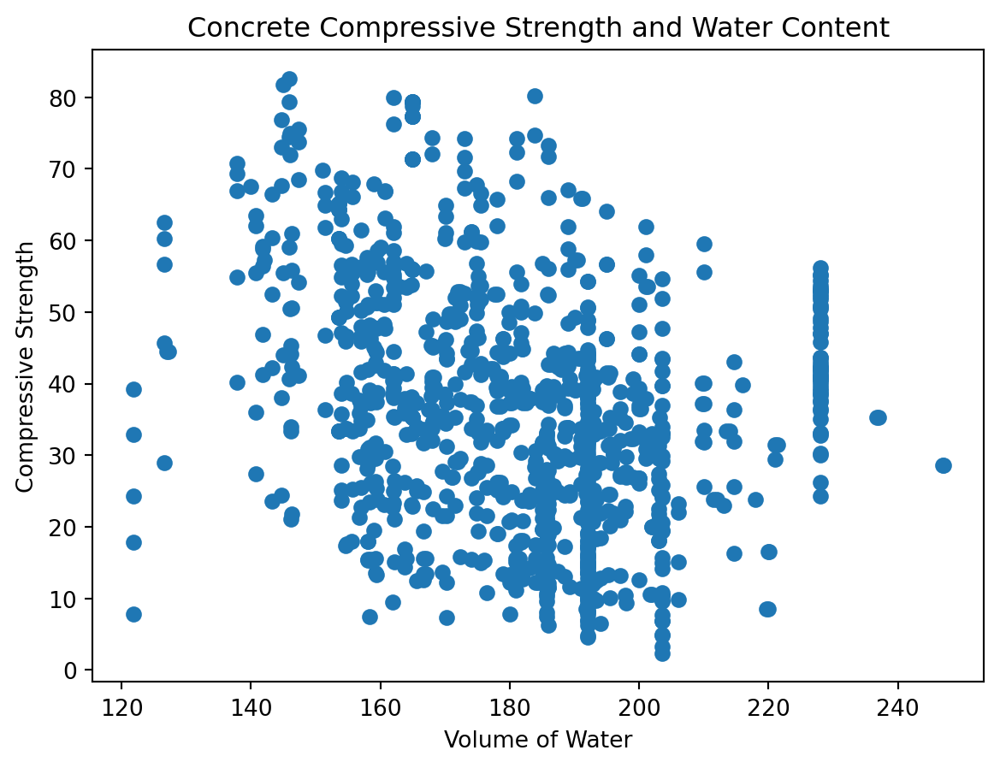

import numpy as np
import pandas as pd
import matplotlib.pyplot as plt
import seaborn as snsA Sample Quarto Notebook
Purpose: This notebook is a sample Quarto notebook that shows some of the features of a Quarto document.
Overview
Throughout this notebook we…
- exhibit how to format within a markdown document (for example how to make purpose bold above, how to create section headings, or how to create this bulleted list)
- how to utilize code chunks within a Quarto notebook
- highlight the convenience and transparency of having all technical analysis and interpretation in one location
Some Arithmetic in Python
For those unfamiliar with Python, at its most basic (for our purposes, anyway) Python is a powerful calculator. For example, the code chunk below evaluates the arithmetic expression \(2 + 3\).
2 + 35We can also evaluate more complex expressions, but if they involve advanced mathematical functions or constants, we may need to pull those objects from an imported module such as {numpy} which we’ve aliased as np for short. The code chunk below evaluates the expression \(\displaystyle{2 + 3\cdot\sin\left(\pi^2\right)}\).
2 + 3*(np.sin(np.pi**2))np.float64(0.7090963489997248)If we try to evaluate both expressions in a single code chunk, only the result of the last expression is printed out by default.
2 + 3
2 + 3*(np.sin(np.pi**2))np.float64(0.7090963489997248)If we want to see both outputs we could either (i) put them in distinct code chunks, or (ii) explicitly call print() on the expressions.
print(2 + 3)
print(2 + 3*(np.sin(np.pi**2)))5
0.7090963489997248Variables and Arithmetic (Basic Objects)
We can also store values into variable containers and use the variables within expressions. For example, the code chunk below stores the value \(3.14159\) in a variable called pi_approx and then we approximate \(5\pi\) with our pi_approx value.
pi_approx = 3.14159
5*pi_approx15.70795If we wanted to overwrite a variable, we can do so easily. In the next code chunk, we reduce the precision with which we are approximating \(\pi\) in our pi_approx variable. We also create a new variable x which contains a random value pulled from a uniform distribution (where all values between the low and high cutoffs are equally likely to be drawn), and then we calculate the sum of those two values.
pi_approx = 3.14
my_random_x = np.random.uniform(low = 2, high = 5, size = 1)
my_random_x + pi_approxarray([6.06511671])Since we don’t know the contents of my_random_x, how can we be sure that the calculated sum is correct? We could print out the contents of my_random_x before computing the sum, or we could use inline code like this…the sum of 3.14 and array([2.92511671]) is array([6.06511671]). This ability to execute inline code within a Quarto Document is an enormous advantage. Every time we run this notebook, the value contained in my_random_x will change – if we statically typed the value of my_random_x and the sum of pi_approx and my_random_x into this paragraph, then we’d need to rewrite the paragraph every time we re-ran the notebook. Admittedly, this is a bit silly of a scenario, but I hope you can appreciate the potential boost in efficiency if, say, you were responsible for running and updating a weekly report that analysed data streams that update each week. The vast majority of your manual updating is now no longer necessary.
Variables and Arithmetic (Advanced Objects)
We’ll often find ourselves working with data in this course. That data may come in the form of an array (vector) or data frame (table). The {numpy} module contains functionality for working with arrays, while the `{pandas} module provides functionality for working with data frames. You can think of an array as a list of values and a data frame as a single-tab Excel spreadsheet.
As mentioned, the {numpy} module makes working with arrays convenient. For example, we can multiply the “vector” \(\left<1, 5, 7\right>\) by \(5\) as in the code chunk below.
my_array = np.array([1, 5, 7])
5*my_arrayarray([ 5, 25, 35])Similarly, we can add arrays that are of the same dimensions together.
another_array = np.array([-7, 23, 1])
my_array + another_arrayarray([-6, 28, 8])But we can’t add arrays that have different dimensions.
a_third_array = np.array([1, 2, 3, 4, 5])
my_array + a_third_array--------------------------------------------------------------------------- ValueError Traceback (most recent call last) Cell In[10], line 3 1 a_third_array = np.array([1, 2, 3, 4, 5]) ----> 3 my_array + a_third_array ValueError: operands could not be broadcast together with shapes (3,) (5,)
Working with Real Data
Often times data is not user-entered. It is, instead, pulled from an external source or directly from a sensor/instrument. The {pandas} module provides functionality for that. Let’s read in a data set on the compressive strength of concrete made from different mixing parameters. The raw data is available here.
concrete_df = pd.read_csv("https://raw.githubusercontent.com/esvs2202/Concrete-Compressive-Strength-Prediction/main/dataset/concrete_data.csv")
concrete_df| cement | blast_furnace_slag | fly_ash | water | superplasticizer | coarse_aggregate | fine_aggregate | age | concrete_compressive_strength | |
|---|---|---|---|---|---|---|---|---|---|
| 0 | 540.0 | 0.0 | 0.0 | 162.0 | 2.5 | 1040.0 | 676.0 | 28 | 79.99 |
| 1 | 540.0 | 0.0 | 0.0 | 162.0 | 2.5 | 1055.0 | 676.0 | 28 | 61.89 |
| 2 | 332.5 | 142.5 | 0.0 | 228.0 | 0.0 | 932.0 | 594.0 | 270 | 40.27 |
| 3 | 332.5 | 142.5 | 0.0 | 228.0 | 0.0 | 932.0 | 594.0 | 365 | 41.05 |
| 4 | 198.6 | 132.4 | 0.0 | 192.0 | 0.0 | 978.4 | 825.5 | 360 | 44.30 |
| ... | ... | ... | ... | ... | ... | ... | ... | ... | ... |
| 1025 | 276.4 | 116.0 | 90.3 | 179.6 | 8.9 | 870.1 | 768.3 | 28 | 44.28 |
| 1026 | 322.2 | 0.0 | 115.6 | 196.0 | 10.4 | 817.9 | 813.4 | 28 | 31.18 |
| 1027 | 148.5 | 139.4 | 108.6 | 192.7 | 6.1 | 892.4 | 780.0 | 28 | 23.70 |
| 1028 | 159.1 | 186.7 | 0.0 | 175.6 | 11.3 | 989.6 | 788.9 | 28 | 32.77 |
| 1029 | 260.9 | 100.5 | 78.3 | 200.6 | 8.6 | 864.5 | 761.5 | 28 | 32.40 |
1030 rows × 9 columns
Perhaps we want to analyse whether an association between water volume in the original mixture is associated with concrete_compressive_strength. This is a great opportunity to utilize functionality from matplotlib.pyplot which we’ve aliased here as plt for convenience.
plt.scatter(concrete_df["water"], concrete_df["concrete_compressive_strength"])
plt.title("Concrete Compressive Strength and Water Content")
plt.xlabel("Volume of Water")
plt.ylabel("Compressive Strength")Text(0, 0.5, 'Compressive Strength')
Conclusion
This notebook only showed the basics, but it is plenty to get started with Quarto!